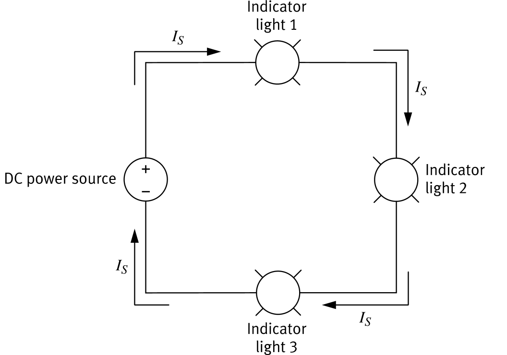
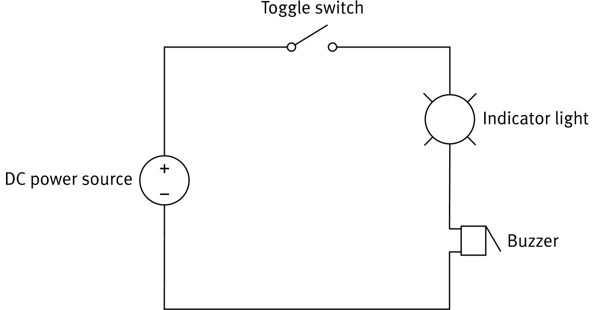
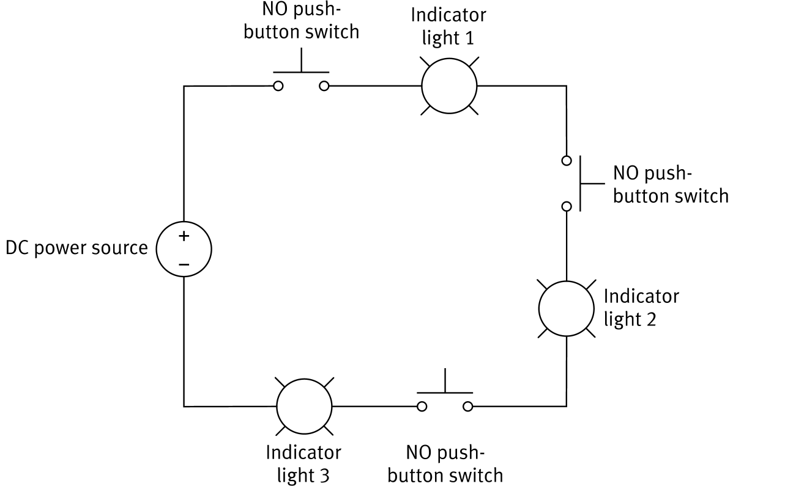
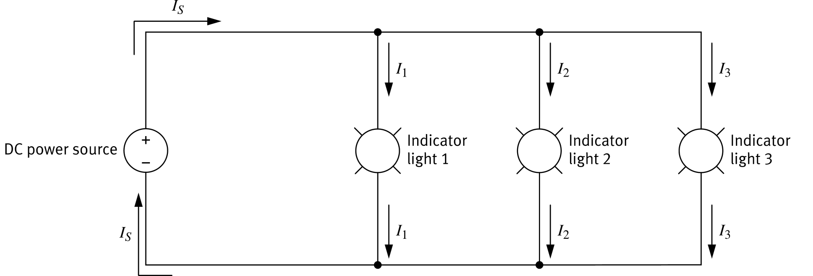
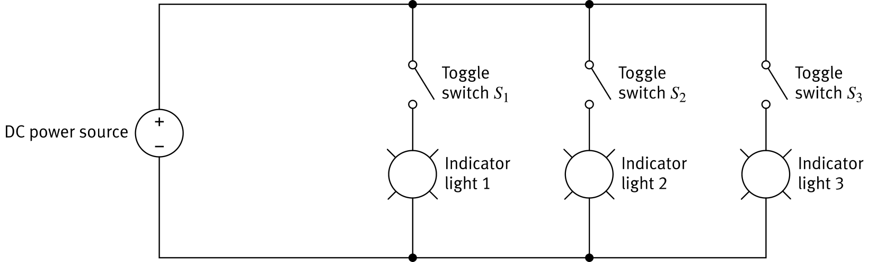
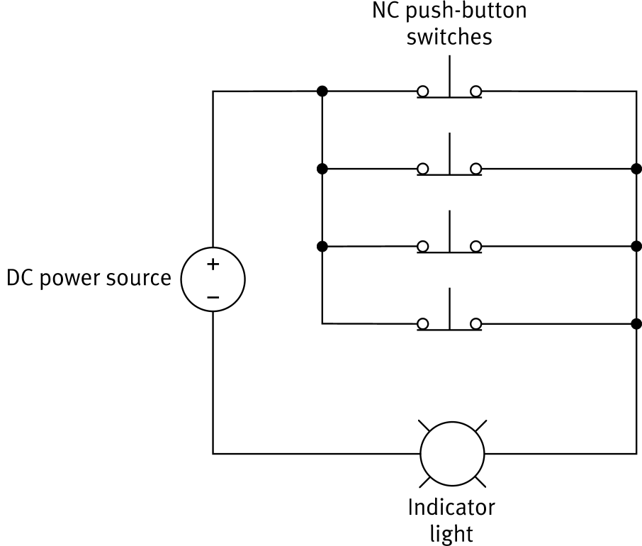

In a series circuit, components are connected along a single path. The same electrical current flows through every component in the circuit.

A switch placed in a series circuit controls all components at the same time.

Multiple NO push-button switches can be wired in series with several indicator lights. Since there is only one current path, the rule is strict:
Releasing even one switch opens the circuit, stopping current and turning all lights off.

In a parallel circuit, components are connected along more than one path. The source current IS splits into separate branch currents (I1, I2, I3) at each junction.

Placing a toggle switch in each branch of a parallel circuit gives independent control over each component.

A car interior light uses four NC push-button switches wired in parallel, one in each door hinge.

| Series Circuit | Parallel Circuit | |
|---|---|---|
| Current paths | One single path | Multiple paths (branches) |
| Current value | Same through all components (IS) | Divides across branches (I1 + I2 + … = IS) |
| Component removed | Circuit opens; all components stop | Only that branch stops; others continue |
| Switch control | One switch controls everything | Each branch switch controls only its branch |
| Switch logic | AND (all switches must be closed) | OR (any one switch can complete the circuit) |